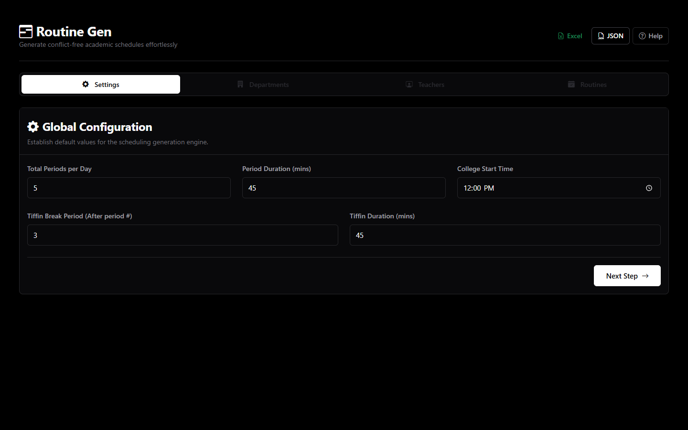
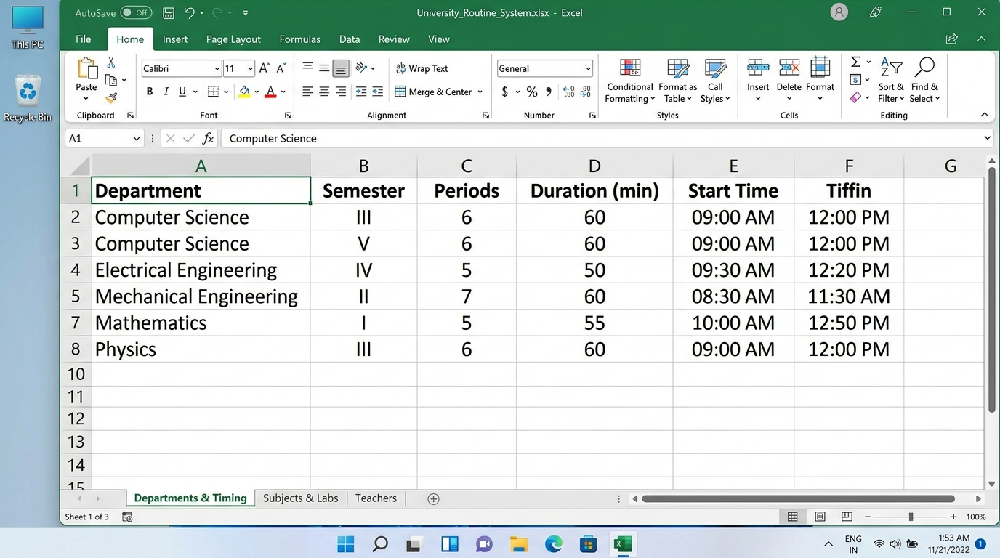
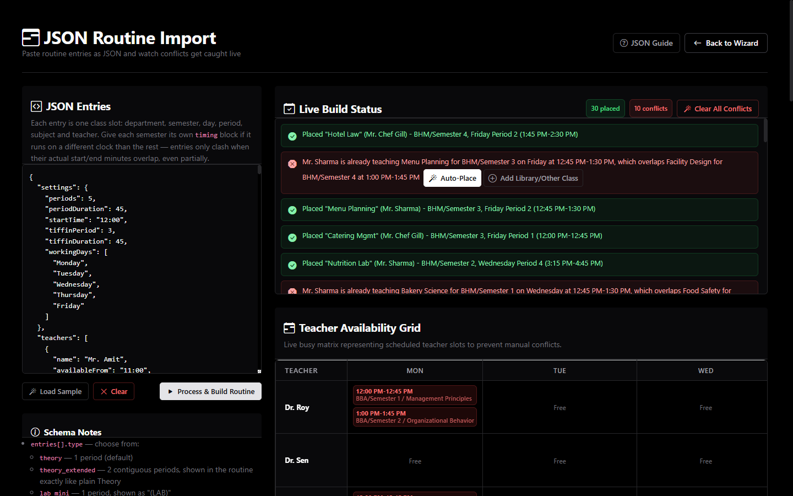

College routines in minutes.
Zero double-bookings. Every time.
Automate conflict-free schedules across multiple departments, different semester timings, and shared faculty. Zero signups, zero server uploads — runs completely private in your browser.
Three ways to build your routine
Choose the input method that fits your college workflow — from a guided step-by-step wizard to bulk Excel onboarding and developer-grade JSON.
Step-by-Step Interactive Wizard
Step 1: Timings Setup. Define college start time, period durations, daily period count, and place your tiffin break. Each semester can inherit these or set its own schedule.

How the Excel Structure Works
Routine Gen uses a standardized 3-sheet workbook (`.xlsx`). You can populate a full college schedule in minutes with automated column normalization and fractional time parsing.
Sheet 1: Departments & Timing. Configures stream names, semester labels, periods per day, period duration in minutes, start clock, and tiffin break settings.

| Sheet Name | Required Columns | Format & Rules | Example Data |
|---|---|---|---|
| Sheet 1: Departments & Timing | Department, Semester, Periods/Day, Period Duration (mins), Start Time, Tiffin After Period #, Tiffin Duration (mins) | Clock times in HH:MM (24-hr or 12-hr string, or Excel decimal fraction). | BCA | Semester 1 | 8 | 45 | 09:00 | 4 | 30 |
| Sheet 2: Subjects & Labs | Department, Semester, Subjects, Labs | Comma-separated strings. Labs automatically generate 2-period contiguous blocks. | BCA | Semester 1 | OS, DSA, Math | OS, DSA |
| Sheet 3: Teachers | Name, Working Days, Available From, Available To | Comma-separated weekdays. Available hours are optional; blank means all day. | Dr. Sharma | Mon, Tue, Wed, Thu, Fri | 09:00 | 16:00 |
How the JSON Structure Works
Designed for programmers, developers, or institutional IT pipelines. Paste your schedule as JSON and watch Routine Gen run live clock-minute clash checks, auto-slot placement, and filler insertions.

| Block | Type | Keys & Purpose | Description |
|---|---|---|---|
settings |
Object | periods, periodDuration, startTime, tiffinPeriod, tiffinDuration, workingDays |
Global timing defaults. Individual semesters can override with their own independent timing blocks. |
teachers |
Array of Objects | name, availableFrom, availableTo |
Optional availability windows. Faculty omitted from this array remain available all day across college hours. |
entries |
Array of Objects | department, semester, day, period, subject, teacher, type |
Individual lecture entries. type can be "Theory" or "Lab Extended" (2 contiguous slots). |
Why making timetables by hand fails
Spreadsheets don't know that Dr. Sharma is already lecturing in another department when you schedule their class.
One teacher. Two classes. Same time.
When multiple academic departments share professors, human coordinators inevitably overlap schedules. You only discover the clash after semester classes have already begun.
Period 3 ≠ Period 3 across departments
If BCA starts at 09:00 AM (45 min periods) and BBA starts at 09:30 AM (50 min periods), period numbers don't match clock times. Traditional tools fail because they compare slot labels instead of real minutes.
One small change ruins days of work
When a teacher suddenly shifts their working days or leaves early on Fridays, manual routines collapse like a house of cards. You are forced to rebuild the entire college schedule by hand.
From raw college data to a conflict-free routine
A structured, logical pipeline designed around how real academic institutions actually run.
Setup Timings
Define college start time, period durations, total periods per day, and place your tiffin break.
Add Departments
Create streams and semesters. Give each semester its own independent start clock and lab configuration.
Register Faculty
List teachers, their active working days, optional available hours windows, and assign their subjects.
Generate & Export
One click generates conflict-checked schedules. Resolve unfillable gaps with filler periods and export to Excel/PDF.
Built specifically for college complexities
Not a generic scheduling toy — engineered to handle real faculty constraints, practical labs, and departmental autonomy.
True Clock-Minute Overlap Math
Every period is converted to literal clock minutes since midnight. Clashes are prevented based on real time, regardless of mismatched period counts.
Dynamic Faculty Workload Balancing
When multiple faculty can teach a subject, classes are assigned to whoever currently has the lightest daily load — so no teacher ends up with a heavy back-to-back load.
Contiguous 2-Period Lab Support
Computer labs and practical sessions require contiguous 2-period blocks. The engine ensures the adjacent slot is clear and avoids breaking across tiffin breaks.
Teacher Availability Windows
Register specific working days and optional clock-time availability windows (e.g. 10:00 AM – 03:30 PM). Classes are never scheduled outside faculty availability.
3 Ingestion Paths & Instant Exports
Populate via the step-by-step UI, upload a standardized 3-sheet Excel spreadsheet, or paste live JSON routines. Export print-ready landscape PDFs or full Excel workbooks.
Conflict Resolver & Session Recovery
Unfillable slots get surfaced in an interactive Resolve Conflict screen with instant filler options. All session progress automatically persists in local browser storage.
Frequently Asked Questions
Everything you need to know about how Routine Gen operates and protects your institutional data.